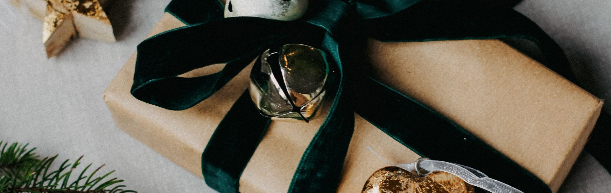

Un regalo que llega.
Una experiencia que queda.
Cuatro catálogos para cerrar el año con tu equipo: experiencias, canastas y gift cards. Y viajes y team building para premiar lo que se destacó.

La tradición funcionó. La logística, no tanto.
Diciembre es el mes más cargado del año y la canasta se resuelve a pulmón.
La canasta pesa.
Un regalo generoso, pero incómodo de mover a mano.
El traslado queda del lado del colaborador.
De la oficina al colectivo y del colectivo a casa, en pleno diciembre.
La coordinación cae en RRHH.
Listas, direcciones, faltantes y reclamos, justo en la semana más cargada del año.
Un regalo pensado para celebrar termina siendo un problema de logística.
¿Cómo funcionan nuestras boxes?
Reciben el regalo, físico o digital.
 2
2
Escanean el QR
que viene adentro.
Sin apps ni claves: se abre el catálogo desde el celular.
Y ahí se abre en dos, según qué elijan.

- 3
Eligen su regalo en el catálogo.Más de 6.000 experiencias en todo el país, o saldo para usar donde quieran.
- 4
Lo viven cuando quieran.Coordinan la reserva directo desde el mail que reciben.

- 3
Cargan sus datos de entrega.Eligen la dirección que más les convenga, no la de la empresa.
- 4
Reciben la canasta en su casa.Hasta 10 días hábiles desde la carga de datos.
Cobertura en todo el país › Cero logística interna para tu equipo.